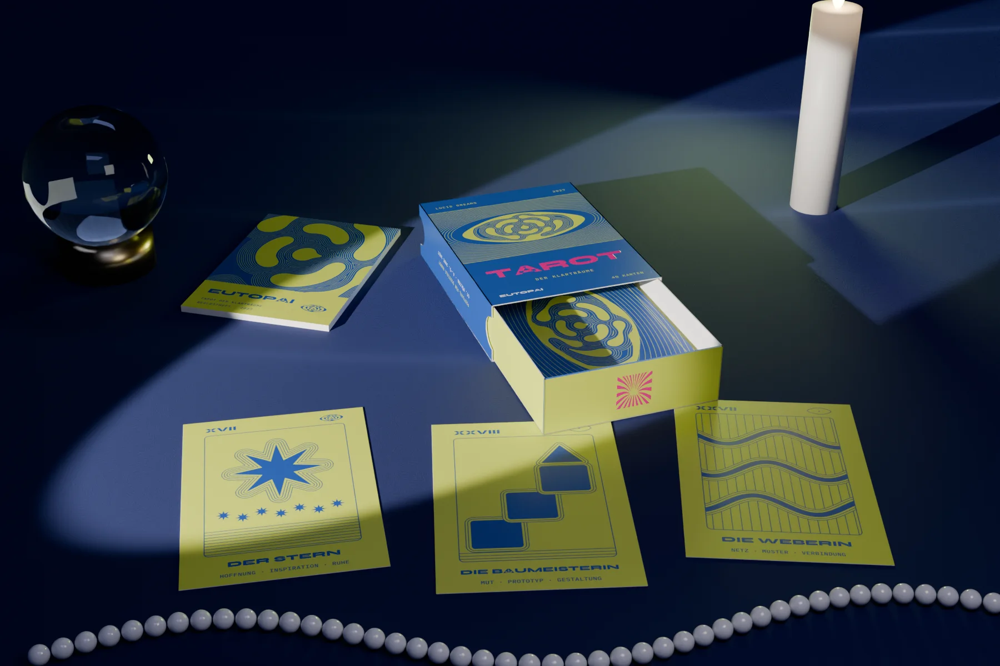
Mediadesign & Installations
EUTOPAI Tarot · Tarot der Klarträume
A 40-card tarot deck in a slide-out box, designed as promotion, programme guide and small ritual for Lucid Dreams · EUTOPAI, a festival for digital art in St. Pölten (4–5 June 2027).
The idea
Where it came from
The festival is called Lucid Dreams. A lucid dream is a dream in which you realise you are dreaming, and from that moment you can start to shape it. That idea became the starting point: a festival object that does not just announce dates, but invites people to look at their own situation and imagine it differently.
Tarot was the obvious form for that. Classic decks have worked for centuries as a shared visual language: a small set of images that anyone can read into, whether they believe in it or not. The EUTOPAI deck keeps the 22 classic images of the Major Arcana, redrawn in the festival's visual language, and adds 18 new signs for the present, such as Der Rebell, Die Kartografin, Das Orakel, Der Automat, Die Weberin and Der Schwarm. Together they run from 0 to XXXIX.
The new cards follow the kinds of installations and topics the festival is about. That makes the deck a guide as well: the cards echo what visitors will meet on site, and the booklet links the deck to the programme.
Why a deck and not a flyer
Promotion material usually ends up in the bin. A deck is something people keep, play with and pass around. It works a bit like a fortune cookie: quick, a little mysterious, and fun for people who have never touched tarot. Nobody needs to believe in anything. Each card has a plain keyword, a question to think about and a short text, so the reading is always open and personal.
The line on the back of the box sums up the attitude: Das Modell ist nicht neutral. Baue Gegenmodelle. (The model is not neutral. Build counter-models.) The cards are a model too. They don't decide anything, they give you something to push against.
Play: Drei Zeichen
Draw three cards
Think of something that's on your mind, then pull the drawer. Three cards land on the table: what was, what is, and what can become. Each card comes with a keyword, a short meaning and a question to take with you. No tarot knowledge needed, and no right answers. (The game is in German, like the printed deck.)
The deck
The deck keeps the 22 classic images of the Major Arcana, redrawn in the festival's visual language, and adds 18 new signs for the present, such as Der Rebell, Die Kartografin, Das Orakel, Der Automat, Die Weberin and Der Schwarm. Each card carries a number from 0 to XXXIX, a name and three keywords. All cards share one back with the festival's eye-and-rings motif. Format: A7, 74 × 105 mm.
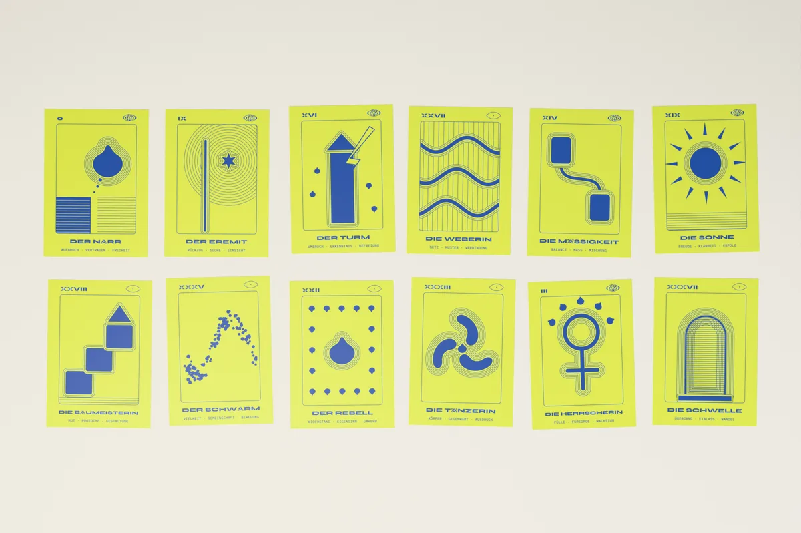
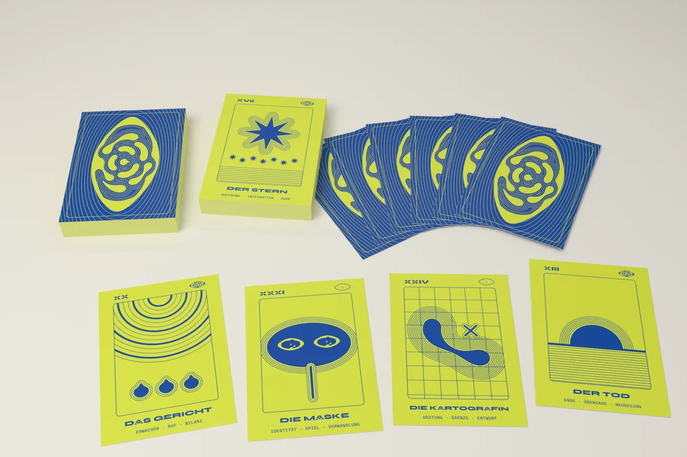
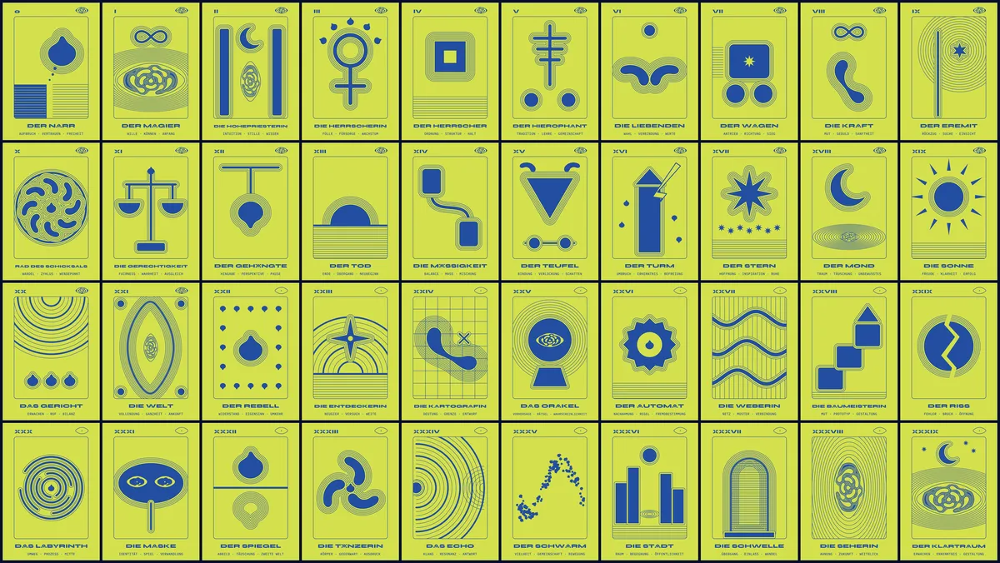
The booklet
A small A7 booklet explains what tarot is and how to read it, lists all 40 cards with a short text and a question, and introduces the festival.
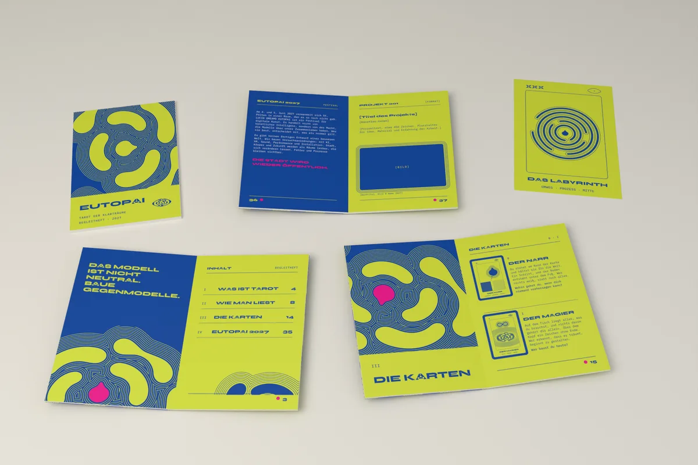
The box
The box is a two-part construction: a printed sleeve, open at both ends with a thumb notch on each side, and a tray with a double front wall. The tray needs no glue: its walls fold up and lock with tabs. The sleeve has one glue flap. Inside: 40 cards and the booklet.
Sizes: sleeve 80 × 27.5 × 111 mm inside, tray 78 × 109 × 26 mm inside.
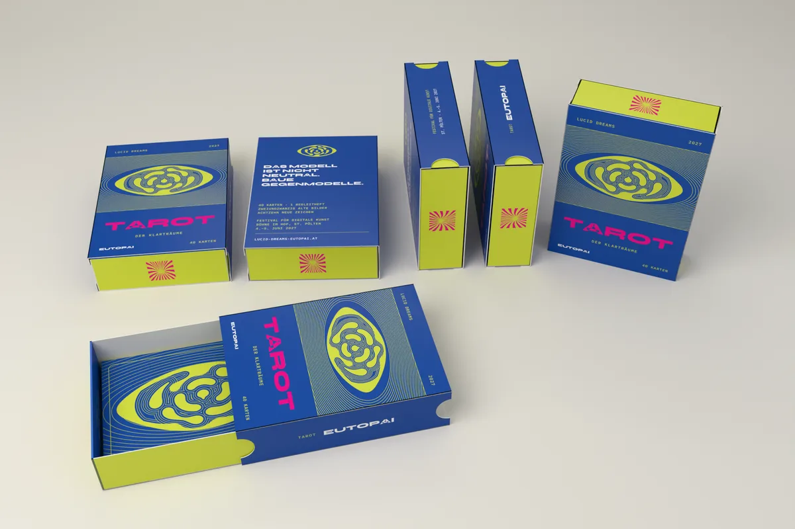
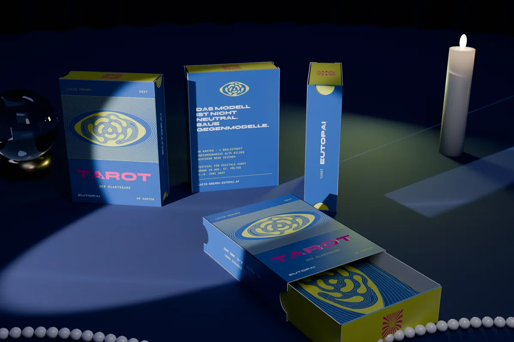
Varnish
The only finishing is a raised, glossy 3D varnish: on the word TAROT on the sleeve and on the logo on both ends of the tray. In the print file it is a separate spot colour called "3D-Lack", set to overprint, so the colours underneath still print. It keeps at least 3 mm from cuts and 1 mm from folds, because varnish cracks on an edge.
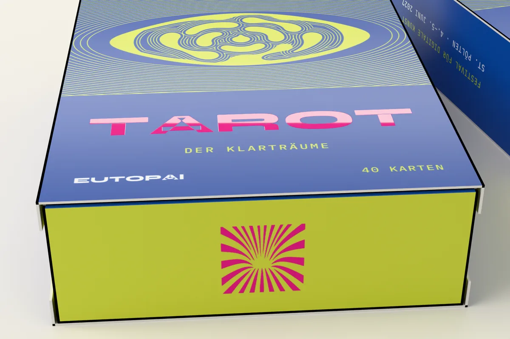
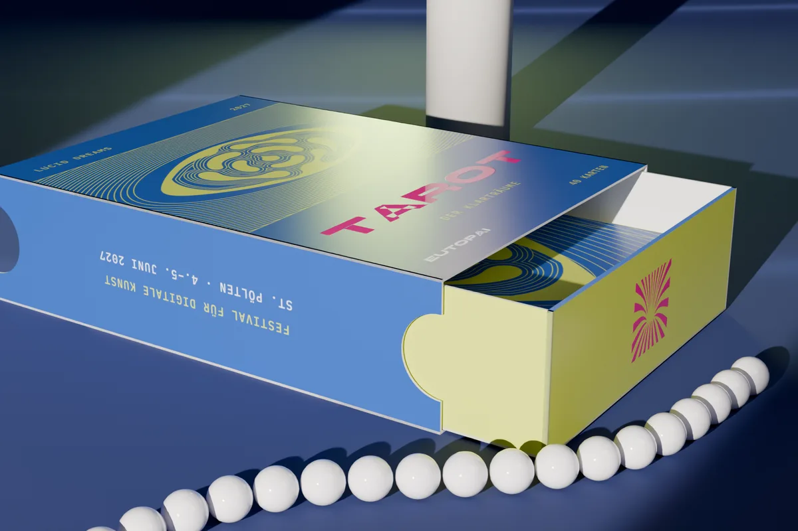
From screen to print
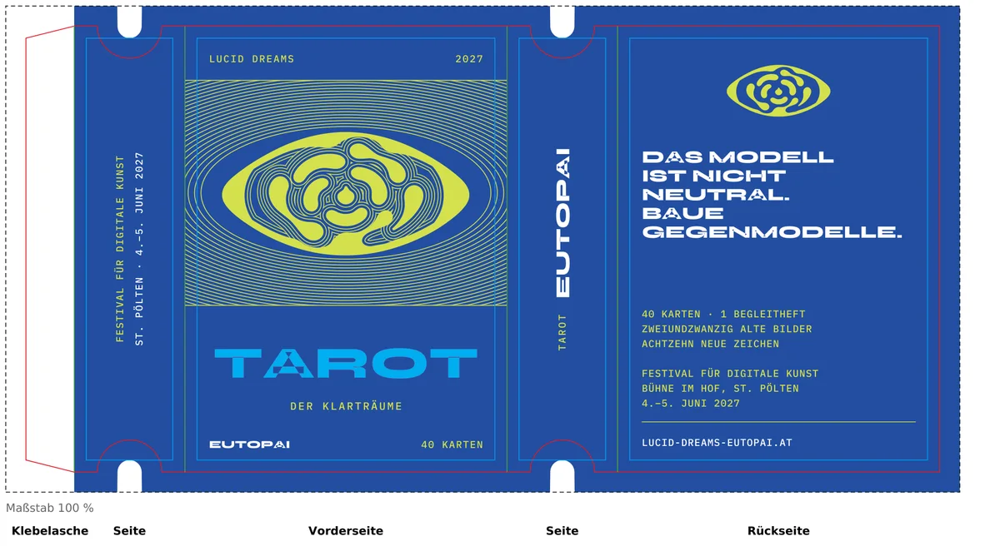
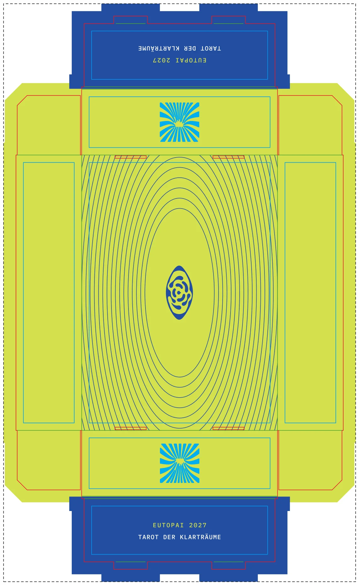
What I learned making the print data:
- Final size and bleed. Every page stores its final size (TrimBox) and its print size with bleed (BleedBox). Backgrounds run 5 mm past the cut, so nothing white shows if the cut is slightly off. Text stays 3 mm inside.
- The lines are not printed. Cut, fold and safety lines live on a template layer. The printer gets them as a separate die line; the print file contains only the artwork.
- Colour is defined, not guessed. The file is PDF/X-4 with the output intent ISO Coated v2 300 % (ECI): CMYK only, total ink at most 300 %, text converted to outlines.
- Varnish is its own plate. A spot colour, 100 %, overprinting, kept away from cuts and folds.
Two ways to make it
At a printer
- Send one PDF/X-4 print file with sleeve and tray, plus the die line as a separate file.
- The sheets are printed in CMYK on folding carton board, and the 3D varnish is added as a raised spot gloss.
- Because the box has its own shape, a cutting die is made for it: a board with steel rules that cut along the outline and press the fold lines (creases) in one go. Standard boxes reuse existing dies, a custom box needs a quote that includes the die.
- The sheets are die-cut, the sleeve is glued at its flap, the tray is folded and locks without glue.
Make it yourself
- Both nets fit on A4: the sleeve is 237 × 121 mm, the tray 142 × 233 mm.
- Print the artwork at 100 % on printable carton, or on self-adhesive paper or foil that you mount on thin board.
- Cut with a cutting plotter or a laser cutter using the SVG files: red lines are cuts, blue dashed lines are creases. Creases get a scoring tool, a second pass with low pressure or, on a laser, low power. Test on scrap first. On a laser, light board can brown at the edges.
- No plotter? Cut by hand with a sharp knife along the 1:1 template and score the folds with a bone folder.
- Gloss at home: clear toner-reactive foil on laser prints, or a clear gloss pen, gets close to a spot gloss, but it is not raised like a printer's 3D varnish.
Downloads: dieline_sleeve.svg dieline_tray.svg


Checking the files
Before handing over, every print file was checked against a checklist: format and bleed, colour space and ink limit, fonts, line weights, no helper lines, varnish settings and distances, glue flap free of ink. Most checks were measured automatically from the exported PDF. To make sure those checks really catch mistakes, each one was also run on a copy with a deliberate error built in, and had to fail. Everything that can't be measured (Is the text inside the safety area? Does every side read the right way up after folding?) was checked by looking and written down.
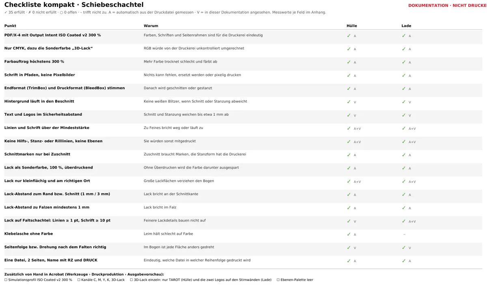